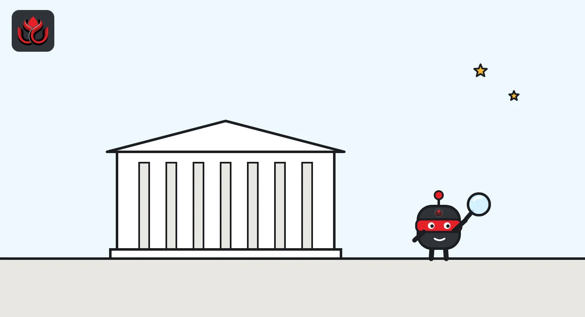
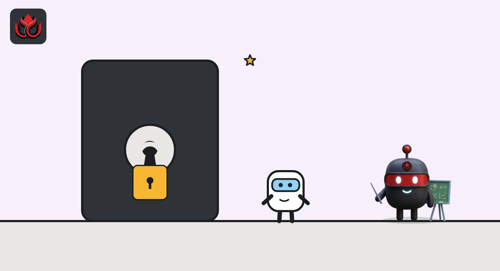

Dubai VARA crypto rules explained: who needs a license and what it covers
In Dubai, crypto businesses need a license from the Virtual Assets Regulatory Authority (VARA), which covers the emirate's mainland and free zones except the DIFC. VARA licenses seven activities, from exchanges to custody, and regulates token issuance and crypto marketing.
Key points
- VARA is the crypto regulator for Dubai's mainland and free zones, except the Dubai International Financial Centre (DIFC).
- Its 2023 regulations license seven activities: advisory, broker-dealer, custody, exchange, lending and borrowing, payments and remittances, and management and investment. Token issuance is regulated too.
- Outside Dubai, the federal Securities and Commodities Authority licenses crypto firms, except in financial free zones such as Abu Dhabi Global Market, which has its own regulator.
- In October 2026, VARA set minimum checks for reserve audits and good practice for public disclosures by licensed firms.
What is VARA?
The Virtual Assets Regulatory Authority (VARA) is Dubai's dedicated crypto regulator. It oversees virtual assets across the Emirate of Dubai, including its free zones, but not the Dubai International Financial Centre (DIFC), a separate financial zone with its own rules, according to VARA.
Helal Saeed Almarri, chairman of VARA's executive board and director general of Dubai's Department of Economy and Tourism, described it in 2023 as "the world's only independent and specialist regulator for Virtual Assets."
Which crypto activities need a VARA license?
VARA issued its Virtual Assets and Related Activities Regulations on February 7, 2023. They set out seven licensed activities:
- advisory services;
- broker-dealer services;
- custody services;
- exchange services;
- lending and borrowing services;
- payments and remittances;
- virtual asset management and investment.
Issuing tokens in Dubai is also a regulated activity, so issuers have obligations when they launch new tokens. Each activity has its own rulebook. VARA published Version 2.0 of these rulebooks on May 19, 2025, with tighter controls on margin trading and token distribution and clearer rules on collateral wallets, and gave firms until June 19, 2025, to comply, its announcement said. That release listed the rulebooks by activity: advisory, broker-dealer, custody, exchange, lending and borrowing, management and investment, VA transfer and settlement, and virtual asset issuance.
The 2023 regulations also required firms already serving Dubai before the full rules took effect to register with VARA and comply with the final rules, and warned that breaches could lead to regulatory action.

How does VARA fit with the rest of the UAE?
The United Arab Emirates has several crypto regulators. Under Cabinet Resolution No. 111 of 2022, the federal Securities and Commodities Authority (SCA) licenses crypto firms based in the country, except those licensed in financial free zones, according to a July 18, 2023, SCA statement published by VARA.
Firms operating in Dubai need only a VARA license. VARA shares its list of licensed firms with the SCA so the UAE has one unified register. The SCA warned that unlicensed providers face a warning, a fine of up to AED 10 million, or referral to prosecutors.
Abu Dhabi Global Market (ADGM), a financial free zone in Abu Dhabi, has its own regulator, the Financial Services Regulatory Authority (FSRA). In April 2026 the FSRA finalized a framework for licensed firms to stake clients' crypto.
Which firms has VARA licensed?
VARA started with a Minimum Viable Product (MVP) phase, granting early licenses with conditions before its full rules were in place. Its news archive records several of them:
- Binance, MVP license, September 19, 2022;
- Komainu, MVP license, November 21, 2022;
- Hex Trust, MVP license, November 24, 2022;
- GCEX, MVP preparatory license, February 17, 2023;
- Crypto.com, MVP preparatory license, March 20, 2023;
- BitOasis, the first broker-dealer to get an MVP operational license, May 1, 2023;
- OKX Middle East, MVP preparatory license, June 15, 2023.
The 2023 regulations gave MVP license holders, existing UAE crypto firms and new entrants a route to full licenses, according to VARA.

What happened to firms that did not register?
VARA set a final deadline for crypto firms already serving Dubai to file for registration or a license, extended it in November 2023, and then said enforcement was picking up pace. A market notice on November 17, 2023, announced market-wide enforcement as the final deadline lapsed, according to VARA's news archive.
The same month, VARA moved to what it called full market operations, with Matthew White taking over as chief executive from Henson Orser on November 16, 2023.
For users, the practical point is simple: a firm marketing crypto services in Dubai should hold a VARA license, and the SCA's unified register is meant to make that easy to check across the UAE.
What are VARA's marketing rules?
VARA was early to police crypto advertising. Its marketing regulations, issued on August 25, 2022, cover all forms of outreach, communications and advertising aimed at the Dubai market, according to VARA.
Content must be factually accurate, must clearly show when it is promotional, and must not mislead people about whether returns are guaranteed. The rules also limit which audiences can be targeted. They apply to licensed firms, advertising platforms and media channels operating from Dubai that carry crypto content for the Dubai market.
What has VARA done lately?
VARA's recent work has focused on client money and anti-money laundering. Its news page lists circulars on classifying qualified investors (January 8, 2026), Travel Rule requirements (February 24, 2026) and an AML/CFT business risk assessment guide (June 12, 2026). Earlier circulars asked licensed firms to act on the UAE's 2026 national risk assessment for proliferation financing (June 1, 2026) and to run a gap assessment against the UAE's 2025 federal anti-money laundering decree-law (November 24, 2025).
In October 2026 it issued two circulars on investor protection. The first, on October 6, set seven minimum checks for independent audits of reserve assets, after a review of all 2025 proof of reserve reports. The second, on October 28, set out good practice for public disclosures. LC Insight covered both in Dubai's VARA reviewed every 2025 reserve report.
Key dates
VARA issues its crypto marketing regulations
VARA issues the Virtual Assets and Related Activities Regulations 2023
SCA and VARA announce a unified UAE register of licensed crypto firms
VARA publishes Version 2.0 of its activity rulebooks
Deadline to comply with the Version 2.0 rulebooks
VARA circular on reserve asset audits
VARA circular on good practice for public disclosures
LC Insight analysis
This section is our reading of the facts above, not a statement of fact.
- We think Dubai's main selling point, a single specialist regulator, also creates confusion. A firm's license depends on where in the UAE it sits, so users should check which regulator a platform actually answers to.
- VARA's October circulars suggest the next phase is about proving client assets exist, not just issuing licenses. The likely result is costlier audits and more detailed disclosures for licensed exchanges.
- The real risk for users is marketing that reaches Dubai from firms with no VARA license. The marketing rules give VARA a tool, but enforcement against offshore players is harder.
What's next
- Reserve audit reports filed under VARA's new minimum checks
- Further rulebook updates on margin trading and token distribution
- Coordination between VARA, the SCA and ADGM's FSRA on a single register
Frequently asked questions
Does VARA regulate the DIFC?
No. VARA covers Dubai's mainland and free zones, except the Dubai International Financial Centre.
Is a VARA license valid in Abu Dhabi?
VARA licenses cover Dubai. Abu Dhabi Global Market has its own regulator, the FSRA, and the federal SCA licenses firms elsewhere in the UAE outside financial free zones.
What is the fine for unlicensed crypto services in the UAE?
The SCA said in 2023 that unlicensed providers could face a warning, a fine of up to AED 10 million, or referral to the Public Prosecution.
Does VARA regulate crypto advertising?
Yes. Its 2022 marketing regulations cover advertising and outreach aimed at the Dubai market, including by media platforms operating from Dubai.
Disclaimer. This article is based on public information and the sources listed below as of the update time shown. It is for information only and is not investment, legal or tax advice. Figures may change as companies and authorities publish new data.
Sources
- VARA, Dubai's VARA issues specialised regulations for virtual assets (February 7, 2023)
- VARA, issues updated activity rulebooks (May 19, 2025)
- VARA, SCA and VARA to ensure unified register of regulated VASPs in the UAE (July 18, 2023)
- VARA, regulations governing virtual asset marketing (August 25, 2022)
- VARA, news and circulars
- ADGM FSRA, finalises regulatory framework for staking of virtual assets (April 29, 2026)